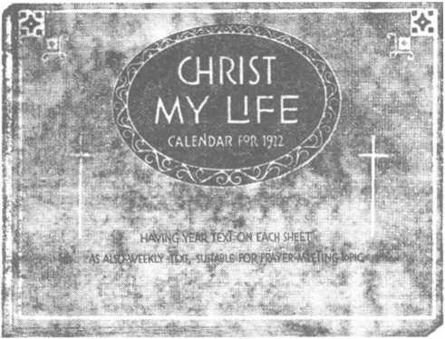

No. 21
334
©f lift® igsffl®tlli),aiada}?ilg^ ate©’”-laalaty
Vol.-.XLII
Semi-Monthly
Anno Mundi 6050—November 1, 1921
CONTENTS
VIEWS FROM THE WATCH TOWER......
Minlitar's Defense of Higher Criticism. Some Points of Divergence ...............
Six Million Men in Arms ...........
German Jews to Palestine ................
KEEPING HIS COMMANDMENTS .........
A New Commandment ..................,
Commandments of Action.....................
A Slaying Work................................
PAUL IN MELITA AND IN ROME .......
Co-operation and a Viper.....................
Gifts of Healing...................................
Puteoll and On.....................................
A Last Effort................................
BIBLES AND BIBLE STUDY HELPS
. 323
. 323 324
. 325 ..326
..326 327 327
.329
..332 .332 .333 ..333
..334
"I will stand upon my watch and will cot rny foot upon the Tower, and will watch to see what He will tap unto me, and what answer I shall make to them that oppose me."—Hahakkuk t: 1.
Upon the earth distress of nations with perplexity, the sea and the wares (the restless, discontented) roaring; nun’s hearts tailing them tar tear and for looking to the things coming upon the earth (society); for the powers of the baanm (ecclesiastic lain) shall be shaken. . . . When ya see these things begin to come to oass° then know that the Kingdom of Cod Is at hand. Look sp, Ute up your heads, rejoice, for your redemption draweth nigh.—Matt. 24:33; Mark 13 29- Luke 21 25-31*
THIS Journal is one of the prime factors or instruments in the system of Bible Instruction, or “Seminary Extension”, no* being presented in all parts of the civilised world by the Watch Towns Bibi.ii & Tract Society, chartered A.D. 1884, “For the Pro* motion of Christian Knowledge". It not only serves as a class room where Bible students may meet in the study of the divine Word but also as a channel of communicatiou through which they may be reached with announcements of the Society's conventions and of the coming of its traveling representatives, styled “Pilgrims", and refreshed with reports of Its conventions.
Our “Berean Lessons” are topical rehearsals or renews of our Society’s published Studies most entertainingly arranged, and very helpful to all who would merit the only honorary degree which the Society accords, viz., Veibt Dei Munster (V. D. AL), which translated into English is Minister of God's Word. Our treatment of the International Sunday School Lessons Is specially for the older Bible students and teachers. By some thin feature is considered indispensable.
This journal stands firmly for the defense of the only true foundation of the Christian’s hope now being so generally repudiated —redemption through the precious blood of “the man Christ Jesus, who gave himself a ransom [a corresponding price, a substitute] for all". (1 Peter 1:19; 1 Timothy 2:6) Building up on this sure foundation the gold, silver and precious stones (1 Corinthians 3: 11-15; 2 Peter 1:0-11) of the Word of God, its further mission Is to “make all see what is the fellowship of the mystery which. . .has been hid In God, ... to the intent that now might be made known by the ehurch the manifold wisdom of God"—“which in other ages was not made kuown unto the sons of men as It is now revealed”.— Ephesians 3; 5-9,10.
It stands free from all parties, sects and creeds of men. while it seeks more and more to bring its every utterance into fullest subiection to the will of God in Christ, as expressed in the holy Scriptures. It la thus free to declare boldly whatsoever the Lord hath spoken—according to the divine wisdom granted unto us to understand his utterances. Its attitude is not dogmatic, but confident; for we know whereof we affirm, treading with implicit faith upon the Bure promises of God. It is held as a trust, to be used only in his service: hence our decisions relative to what may and what may not appear in its columns must be according to our Judgment of his good pleasure, the teaching of his Word, for the upbuilding of bis people in grace and knowledge. And we not only Invite but nrgo oun readers to prove all its utterances by the infallible Word to which reference la constantly made to facilitate such testing.
TO US THE SCRIPTURES CLEARLY TEACH
That the church is “the temple of the living God”, peculiarly “his workmanship”; that Its construction has been in progress throughout the gospel age—ever since Christ became the world’s Redeemer and the Chief Corner Stone of his temple, through which, when finished, God’s blessing shall come “to all people”, and they find access to him.—1 Corinthians 3:16, 17; Ephesians 2:29-22; Genesis 28 :14 ; Galatians 3 : 29.
That meantime the chiseling, shaping, and polishing of consecrated believers in Christ’s atonement for sin, progresses; and when the last of these “living stones”, “elect and precious,” shall have been made ready, the great Master Workman will bring all together in the first resurrection ; and the temple shall be filled with his glory, and be the meeting place between God and men throughout the Millennium.—Revelation 15 : 5-6
That the basis of hope, for the church and the world, lies in the fact that “Jesus Christ, by the grace of God, tasted death for every man,” “a ransom for all,” aud wi.l be "the true light which lighteth every man that cometh into the world”, “In due time”.— Hebrews 2:9; John 1:9; 1 Timothy 2.5, 6.
That the hope of the church is that she may be like her Lord, “see him as he is,” be “partakers of the divine nature’,’ and share bls glory as his joint-heir.—1 John 3 2; John 17:24; Romans 8:17; 2 Peter 1:4.
That the present mission of the church is the perfecting of the saints for the future work of service: to develop in herself every fi-ace; to be God's witness to the world; and to prepare to be kings and priests In the next age.—Ephesians 4:12: Matthew 249 4 ; Revelation 1:6; 20 : 6.
That the hope for the world lies in the blessings of knowledge and opportunity to be brought to all by Christ’s Millennial kingdom, the restitution of all that was lost in Adam, to all the willing and obedient, at the bands of their Redeemer and his glorified church, when all the wilfully wicked will be destroyed.—Acts 3:19-23; Isaiah 35.
•Published ey
I24COLUMBIA HEIQHTS n o BROOKLYN, NY, USA’
Foreign Offices: British 34 Craven Terrace, Lancaster Gate, London W 2, Canadian 270 Dundas St, W., Toronto, Ontario; Australasian ■ 495 Collins St, Melbourne, Australia; South Afrih tan: 123 Plein St., Cape Town, South Africa.
Please Address the Society in Every Case.
YEARLY SUBSCRIPTION PRICE. United States, $1.00 ; Canada and Miscellaneous Foreign, $150; Great Britain, Australasia, and South Africa. 8s. American remittances should be made by Express of Postal Mone\ Orders, or by Bank Draft Canadian, British, South African, and Austialasian remittances should be made to branch offices only Remittances from scattered foreign territoiy may be made to the Brooklyn office, but by International Postal Money Orders only.
(Foreign it an station? of this journal appear in several languages)
Editorial Committed! This journal is published under the supervision of an editorial committee, at least thiee of whom have read and approxed as truth each and even article appearing in these columns. The names of the editorial committee are- J. F Rutherford, W. E VanAmborgh, F. H. Robison, G H. Fisher, E. W.Brenisen. Termsto the Iiord^B Poon AH Bible students who, by reason of old age or other infirmity or adversity, are unable to pay for this journal, will be supplied free if they send • postal card each May stating their case and requesting such provision We are not only willing, hut anxious, that all such be on our list continually and in touch with the Berean studies.
Notice to Subacribens F® ** “*■ a «*•, “nd ■ eard aeknowledgnMmt for irtnewil ar
for a new autiscrintlan, Bereist and -dry ->f -enewa) are Indfaatad
Vlthln a month fcy chantra In expiration data, as shown on wrapjer label.
Entdred a» Sooond Clnaa Matter al Brooklyn, NY , Pastoffiat ttrdjrr the Act q/ Marefi3rd,
PRAYER MEETING TEXTS FOR DECEMBER
November 30 JEHOVAH ILLUMINES Jelmvub my God will enlighten my darkness ”—Psalm 13 2S
December T: JEHOVAH FEEDS "Tribt Id Jehovah, and do good, . . . and verily thuu shaJt be fed"—Psalm 37:3
December 14: JEHOVAH STRENGTH LN s "Jehovah, even Jehovah, Is my etienfth ’* —Isaiah 12 2
December 21 JEHOVAH SATISFIES "He satlsfleth the longing soul, and ftlleth the hungry soul with good"—Psalm 107:9.
December 38. JEHOVAH GIVES MCT0R\ "Thanks be to God. who ttelh ua the victory through our Lord Jenn Christ"—1 Corinthians 15: 07.
The year-text for 1922, “God . . . glveth us . . . victory through . . . Jesus Christ” (1 Corinthians 15:57), appears on every sheet (though not shown on the cover sheet pictured above) together with a suitable week-text which we recommend to be trned as a prayer-and-testimony-meeting topic. In addition to these items there is a regular weekly calendar on each sheet, under the dates of which occur the hymn numbers for those days.
The size of the pad is 7J" x 5J" and is so arranged as to stand up on a desk or table, or hang on the wall. Price, 80c each, postpaid; or 25c each, carriage collect, if procured in lots of twenty-fiva.
Vol. XLII
November 1, 21
No. 21
FEW people there are who can correctly state the position of an opponent. It is in recognition of this fact that many have thought our publications general] v to bo too extreme or radical in their statements about the tenets of modern theologians, college professors, doctors of divinity, and others. It is in recognition of this fact on our own part that, insofar as possible, we have sought to give the actual evidence of unfaithfulness on the part of the shepherds of Christendom, whenever that subject has arisen.
The subject has come up again through a lecture recently delivered by Mr. William Jennings Bryan in Louisville in defense of the Bible. It is to Mr. Bryan’s credit that he is one among the few prominent men of the world who still believe in the divine inspiration of the sacred Scriptures, in any \ahd sense of the term. He is confused along with most of the better-endowed believers, on the point of “Christian citizenship”. From his actions and affiliations we are obliged to believe that he still holds to the view that it is appropriate for Christians to meddle with the world’s affairs in hope of rectifying them and of making the earth a fit place for Christ Jesus to come to. There is no occasion to question the benevolent intention of such people; but there is occasion to question their faith and humility. To take up with a serious work which is unauthorized by the Church’s Lord and Head is the kind of presumption which will not only lead to abject failure but which is also dishonoring to the One called Master.
A copy of Mr. Bryan’s remarks in favor of the Bible and against infidelity in the pulpit and professor’s chair is not before us; but it drew the fire of more than one prominent pulpiteer, among them the Rev.A.E.Whatham. This gentleman, in a letter addressed to and published in the Louisville Herald, so well sums up the presentday views of higher critics and evolutionists that the letter seems to be worth reproducing practically in full. Mr. Whatham asserts that he takes up the defense of higher criticism “for the sake of decency and education”, after having called in question Mr. Bryan’s qualification for approaching Bible subjects at all by saying that “a cobbler should stick 'to his last”. The article follows:
MINISTER’S DEFENSE OF HIGHER CRITICISM
“Mr. Bryan divided his topic into four parts, (1) the atheist, (2) the agnostic, (3) the higher critic, (4) the evolutionist. These Mr. Bryan specially named as ‘the four enemies of the Bible'. There was, however, one enemy, greater than any one of the four named by Mr. Bryan, that he did not name because, evidently, had be done so he would have been naming himself. I mean the literalist, as a professed believer in the entire Bible as it is written, who, In defending this aspect of the Bible, has lighted the fires of the stake, spilled human blood, hindered the progress of education, and turned civilization into a wrong direction nioie than the other four enemies named by Mr. Bryan. This is, of course, a mere assertion, but its truth is abundantly confirmed by evidence adduced in White’s ‘Warfare of Science’. I would, then, have my readers bear in mind this point as they peruse my reply to Mr. Bryan, that he himself with all those holding his view of the Bible, is the greatest enemy that the Bible possesses.
“1 begin my reply by saying, (1) I am something of an atheist, (2) slightly more of an agnostic, (3) very much a higher critic, and (4) entirely an evolutionist. And yet I am a staunch evangelical in religious thought. When men of my views, who compi ise the majority of college professors attacked by Mr. Bryan, are denounced as enemies of the Bible I am surely called upon to defend at least my own position to the contrary. In such defense it will be my eflort to show that it is men like Mr. Bryan and not like mvself who are the real enemies of the Bible.
“First.—The so-called orthodox God is, with men of thought, a being of the past. The Hebrew deity who is recorded as having by a flood destroyed the whole earth and its inhabitants excepting eight persons and tw’o of each kind of beast, has long since in the minds of scholars, taken his place with the gods of Babylonia, who arranged a similar Hood. The deity w’ho sent a foreign people into the homes of other men, directing the invaders to slay every body and eyery thing except a sufficient number of virgins for the use of the Lord’s army, no longer exists in the minds of thoughtful people. In plain English, Yahweh, the War God of the Hebrews, and the sex-deity of the Canaanite-Israelites, is as dead as the Egyptian Osiris, without any possibility of a resurrection such as this divinity had in the minds of his worshipers.
“What god, therefore, is it in whom I believe? Certainly not this god as sketched with these attributes in the Old Testament, so that here I am somewhat of an atheist according to the orthodox view of the Bible. That I do believe m another sort of god altogether different in character from the God of the Hebrews, goes without saying, but of this anon. In the eyes of Mr. Bryan I must be something of an atheist, and of this I am justly proud.
“Second.—-I am slightly more an agnostic than an atheist When Job said, ‘Canst thou by searching find out the deep things of God,’ he show’ed himself to be very much of an agnostic, for in plain English what he meant was that as a mathematical certainty we know nothing whatever either about God or his ways, and the same applies to us today, for no man has ever orally heard the voice of Go<^ MS which the Bible itself deci ires even while lieie contradicting Itself. (Exodns 11 ci John 1 IS, WT) The eminent scholar, Professor Plunimei. says lh:>l noteven Moses heard the voice of God, while the equailv eminent scholar, Piofes-sor Driver, says. ‘The divine communications made to Moses were presumably internal rather than external; and vote Imparted through the avenues of rel'ei’ion and conscience rather than by the outward hearing’ (John:Ex. Cam. Bib.) It was to the soul of Moses, as Delitzsch says. that God spoke, an unavoidable conclusion m view of the Biblical statement that no man at any time has either seen God or even heaid his voice It is to the soul of man that God speaks today as clearly as he ever spoke to any one at any time any where. The eriors in the Bible, of which there are many, as well as the errors we make in our understanding of divine purposes, notwithstanding that the Bible says that we have the spirit of God within us teaching and guiding us, aie the results of the human failure to correctly appiehend the divine promptings Thus it is that we are all more or less agnostics, tor we know not clearly either God or his ways, and have here to work along the road of discovery, for ‘discovery’ is today admitted by scholars to be the new word for revelation.— Tennant, Barton, etc.
“Third—Fiom the above it will lie seen that I am very much of a higher critic, and this I am forced to be if I would adopt Christ as my Teacher, seeing that of the modern school of Old Testament criticism Jesus Christ himself was the original founder. H lien he denounced the teaching of ‘an eye for an eve, and a tooth for a tooth.’ including all similar doctrines lie was denouncing the barb.itic cruelty of the God of the Hebrews, who is recorded as himself commanding all the ancient Israelitish ordinances of this characler. (Matthew 5:38; cf. Exodus 21:24; 34: 3, 4) If anyone should endeavor to carry out some of these ordinances today, such as Ilie burning of a witch, and the stoning of a man for gathering sticks on the Sabbath (Exodus 22-18; Numbers 15:32-36), the public would lynch him.
“The chief work of the higher 11 itic is io shot, the errors in history and the mistakes m ethics of both of which the Old Testament is full The aim, however, in this chief work is neither the destiuction not the beliltling of the Bible, as Mr. Biy.m seems to think, but the enhancing of its value; especially in the case of those who have a modern scientific training, which Mr. Bryan does not seem to possess.
“Savs Canon Driver, one of the most spiritually minded, while eminent scholars of the English Church of today: ‘The Bible cannot in every pait, especially in its early parts, be read precisely as it was read bv our toiefathers We live in a light which they did not possess, but which it has pleaded the providences of God to shed around us and if the Bible is to retain its authority and influence among us, it must be read in this light, and our beliefs about it must be adjusted and accommodated accordingly’ (Genesis WC, p. 42) This, then, is the aim of the higher critic, to retain and perpetuate the authority of the Bible among us by showing us in detail how the Bible must be read in the new’ light to accomplish this end.
“Mr Bryan admitted that the trend in the thought of the majority of university and seminary students of today is ‘away from the faith of their fathers’. Now this is perfectly true, and being true, is, as Mr. Bryan rightly assumes, a tremendous menace to the success of our future civilization. But Mr Bryan in his tirade of abuse against the higher critic and modern university professor, does not seem to be aware of the true inn«e of this ‘falling away from the faith’, or of the only’ possible method of once more establishing it In the hearts of those who now discard It, whose ranks are daily widening. There is, we may say. in the air, a feeling that something is wrong with the Bible, and when the thoughtful man, or the student, goes to the shelves of the venous libiaiies for the special works dealing with the Bible, such as the latest published commentaries and eucyclo-pmdias, he finds one and all treating the Bible from a veiy different standpoint from that in which it was treated by our forefatliei s. This, of Course, is necessarily so, owing, as Canon Driver intimates in the new light which in the pi evidence of God our modem knowledge has thrown upon the Bible. This light makes it impossible for the thoughtful man and student of todav to accept the Bible as his forefathers accepted it, and, consequently, unless there is some competent teacher to idiom be can go for guidance in this matter the Bible will very soon become to him a closed and discredited book. To prevent this lamentable conclusion is the woik of the higher cutic
“Fourth.—Mr. Bryan’s greatest hostility was shown toward the evolutionist, and here he began by saying, ‘To believe in evolution is to tear the first three chapters of Genesis out of the Old Testament and to discard the first chapter of Matthew’ and the story of the resurrection’.
“Now this whole statement is as absurd as the later statement that ‘higher critics are not evangelists', by which he evidently meant :ue not evangelicals But Canon Barnes, D Sc., who preached a course of sermons in Westminster in the spring of this year defending and explaining the doctrine of evolution, in pieuchiug the sermon at the recent London confeience of ‘Modern Churchmen, declared himself to be an ‘evangelical’, and not a ‘modernist’. In a recent lecture delivered at Oxford Canon Barnes said, in referring to the nari.stives lecorded in the three opening chapters of Genesis, ‘Though the Genesis account has no essential connection with the Bible as a whole, there is no need to be ashamed that it has been accepted so long by the church. It is a fine descnption, free from the grossness of other stones of creation, a piece of imaginative speculation with a noble theistic conception ’
“Now this is the language of an evolutionist, who yet declares himself an evangelical and a staunch believer in the resurrection of Christ, a man who while a distinguished divine of the English Church is also a distinguished scientist it only shows what a very absurd lecture Mr. Bryan’s addiess was as a whole and in its parts, the talk of u man unqualified to speak on the subject chosen by him. Such talks as these by men of this character do infinitely greater hnim than the talk of a professional infidel. The very fact that Mr Biyan acknowledged that most university prolessors and seminary lecturers weie teaching evolution and higher criticism should have caused him to treat the subject with the respect due from a thinkei and not with the empty jibes of a pLltlorm oratoi When Mr Bryan repie-sented certain evolutionists as claiming th,fl ‘a water puppy crawled out of the water onto the land, and that we are descendants from that water puppy,’ he turned what should have been an address upon an important subject by a man of education into the loquacious harangue of the street lecturer This is why I said that for the sake of decency and education I would undertake to reply to Mr. Bryan’s last Monday evening’s address on the Bible.”
SOME POINTS OF DIVERGENCE
It would be invidious to pick this contribution to small pieces. The reader will have noticed its most important divergence from the Scriptures. According to this gentleman, it is the work of the higher critic to discern and to declare which pai ts of the Bible are acceptable as good ethics. The higher cutie must also allow the sparkling light of his wonderful intelligence to illuminate the pages of God’s Word. That Word itself, according to the Bible, is a lamp for the believer’s feet. According to the view above presented evolution is not in accord with the Bible, therefore the Bible is wrong. This re\ erend teacher also overstepped himself in saying that if one should endeavor to burn a witch or stone a man for Sabbath desecration the public would lynch him. Of course it is ever so much nicer to lynch a man than it is to stone him I
The marvel is not that worldly-wise men disagree entirely with the Bible and fail utterly to discern its beauty; the wonder is that while so doing they claim to defend it and to be followers of the Lord Jesus who, so far from finding fault with the teaching of the law, “an eye for an eic, and a tooth for a tooth,” actually fulfilled the major 'portion of that passage by giving his “life for a lite”.
Is it any wonder that under the spiritual guidance of such blinded leaders of the blind Christendom has lost nearly all the faith it ever had and is confused and distressed beyond comparison? That Chnstendom is confused and distressed is cleaily shown by an editorial in the Philadelphia Inquvei, commenting on ceitam remarks of former Bi dish Ambassador Bryce, made in New York on the eve of his departure home. Parts of the editorial we quote:
“Them is amp'e eMileiice to support the view which Lord Bryce piesented tli.il the ons.ni of the troubles of all kinds fioni w Im li the < >ld World is suifering is fundamentally psychoioUK .il . . It is in this circumstance that Lord Bryce recognized the most unfortunate and sinister feature of the conditions which he was considering In view of those conditions, how is it possible, he asks, for business to ien\e or 1or piosperily to return? and ecery one will understand that this question admits only of a negative reply. So long as each country is antagonistic to some othei so long as jealousies and rivalries and animosities prevail, so long as national policies are actuated by fear and ill-will, rather than by a disposition toward mutually beneficial helpfulness, it is too plain for argument that little progress can be made toward the peaceful, friendly and definitive settlement which is so much to be desired, and that such is the existing situation one thing after another has demonstrated with a painfully impressive emphasis.
“Not until a remedy has been found for this basic evil can any gi eat improvement be reasonably expected and only by slow stages is it likely that the indispensable appeasement will be reached through which alone the jarring, warring, jealous nations can work out their salvation. Eventually the ex-belligerents through the education of a painful experience will arrive at an understanding of the direction in which their interests really lie, and having been thus instructed will cease from a sterile and suicidal strife, but there are few indications that they are as yet within eight of that so devoutly to be wished-for consummation, and how far the healing process can be hastened by exterior influence is quite problematical.”
SIX MILLION MEN IN ARMS
The situation is not clearing one particle, for recently-published statistics as printed in the New York Herald show that active armies of the fourteen most important nations of the world today include approximately sb. million men:
hile China stands first among the nations in this summary of soldiers actually under arms about Septembei 1, 1921, being credited with 1,370,000 active troops, France is far ahead among the nations not distressed by civil strife in the number of men with the colors. The French arm} strength is placed at 1,034,000 men, the British Empire standing next with 740,500, and Germany last with 100,000 The United States stands thnteentU with 149,000 men in the Regular Army, exceeding only Germany, while Itai} has 350,000 and Japan 300,000 active troops.
“Figures for other Powers include Russia, 538,000; Poland 450,000; Greece, 255,000; Spain, 253,000; Switzerland, 170, 000; Turkey 152,000 Czechoslovakia, 150,000”
Some of these armies are engaged in intense military opeiations in Asia Minor—namely, the armies of Greece and of Turkey. Few facts are allowed to get into the public press about the campaign, as is shown by a contributed article in the London Foreign Affairs, a forward-looking British periodical:
‘ Stage management toi the benefit of newspaper correspondents is one of the aits in which the Greeks have no rivals. Few, indeed, are the correspondents whom the} fail to deceive, and it was a sad blow for them when a distinguished representative of the Manchester Guardian, who was recently tn Asia Minor, discovered and reported the tiuth about the tieatment of the Turkish population under Gieek rule. But there are other journalists in Anatolia who are more gullible or less honest. By one of them, at least, we have been solemnly informed that the Turks welcome the Hellenic army with delirious joy, and even (among other pictuiesque details) that many of the Moslem peasants regard the Greek officers with ‘religious veneration-'
“It is unnecessary to warn leadens of Foreign Affairs against absurdities such as these Whenever the Greeks have annexed new territory, whether in Thessaly, Macedonia, Crete, or Thrace, the result has been the rapid disappearance of the Moslem and other non-Greek elements of the population. If the Greeks succeed m establishing their rule in Western Anatolia, the same result will happen there. For all the arguments of the Greek propagandists and their British supporters are based on a false assumption —l.e., that the Christian Greeks have a higher standard of conduct than the Moslem Turks. This is the Great Illusion about the Near East. Greek Christianity means Greek Nationalism, and has no rel.ition to justice or humanity."
The same number of the same journal issues a warning to the British public, showing that not all Englishmen are blinded to that nation’s foreign policy:
“We are spending for the current financial year on puMic education, £62,518.000; on the army, nai y, and air force, £207,794,000; i.e., more than three times more to destroy than to construct. We can only spare £30,000 to patch up slum property in the whole of Scotland, but we can spaic £24,960.000 upon the military occupation of Mesopotamia We have cut down a building piogramme, recognized as Indispensable, by about one-half, but we are presenting a dove of peace to the Washington Conference in the shape of four new dreadnoughts, whose initial cost is to he from eight to ten million pounds apiece.
“The key to these contrasts is to be sought In an autocratic, secretne. nationally uncontrolled foreign policy.
“In the ten years before the war we spent £684,000,000 on armaments, which we were told would insure peace. The result was war, and our national debt stands today at £8,000,000,000
“We won the war. The war was to bring us unexampled advantages. We base added a million square miles to our empire, and added two millions to our unemployed as the result of it. The peace settlement was to be a just and equitable one. It was an unjust and wicked one, drawn up behind closed doors. Today we are spending four times more on armaments than we were in 1913.”
GERMAN JEWS TO PALESTINE
All has not been pleasant for the Jews m Germany, not even for the richer ones, if a report contained in the Philadelphia Public Ledger and dated from Berlin be true. Both of the names mentioned in the following quotations were prominent m helping the German Republic get on its feet financially. Without them the revolution would certainly have fallen through. As soon as the Republic got on its feet both radicals and imperialists turned bitterly against them because they were Jews. They are now actively engaged in the Zionist work, as the following lines show •
“Unobserved by the press and genei.il public, the movement
KEEPING HIS COMMANDMENTS keep his commandments, 1 John 5: 3
"For this is the love of God. dial we
THE writer of these woids was the inspired witness of the Lord, addressing himself to those begotten to membership in the new ci cation. In this epistle he emphasizes the necessity of being perfected m love, without which none can gam the prize.
The gentile times hating ended, the harvest period of forty years having passed, some of the fully consecrated ask, Why do we find ourselves yet this side the vail? The correct answer to this question seems to be: (1) To perfect ourselves for the kingdom; and (2) to appear as witnesses to the world against Babylon and foi the kingdom of Messiah. These two reasons are so closely associated that they cannot be separated. To show forth our love for God and the King of glory we must now’ be witnesses as oppoitunitj is afforded; and indeed blessed is this pri.ilege.
To prove our love for God we must keep his commandments, not because of morbid fear or by restraint; but with a ready mind and a jojful heart. When wre were in the Babjlomsh systems, were taught and believed that eternal toiture would be the fate of those w’ho failed to reach heaven, we may have been inclined to serve God, keeping his commandments in a measure in order to escape such a terrible fate. But the true Christian, now enlightened and privileged to serve the Lord, must be moved by a different cause in serving. His inducement for service must be love out of a pure heart, taking a real joy and delight in the service of the Lord.
To love God means to appreciate that he is the great and gracious Jehovah and the rewarder of all those who diligently seek him; to have gratitude to him for what he has done for us; to have a worshipful adoiation for for emigration to Palestine has assumed very large proportions, so that the woild will soon hear of an invasion of the Holy Land by German Jews. The movement is being handled by such astute business men as Sklarz brothers and Parvus Helphand.”
“Both the Sklarz brothers and Parvus Helphand, deeply disappointed that the Republican Government was unahle to combat the ever-mowing anti-Semitism, combined with a number of their we.iltliv co-religionists, who were equally disgusted, to take the Zionist movement in hand and organize a wholesale emigiation from Germany to Palestine.
“Their agitation lias been conducted unobti usively from house to bouse, and thousands ol families already have enlisted for the land of milk and honey, but they will not be allowed to emigrate until the ground has been prepared for them, and for this pin pose large sums of money have been collected from wealthy German .levs
“An exploration expedition is lent mg Germany within a few days, headed by one of the Sklar/. In others, to study the Holy Land and make rri angements Pu the multi tildes to follow. Despite the bittei cess piev.nling between the Jews and the Junkers, the loi mer su._ceeded m placing a number of young men on the large feudal estates to acqune the methods so success,'idp, practiced heie and to introduce them in the ‘promced lint, winch will also be explored regarding its mineiiil possibilities.”
and his conrmaiulinents are not grievous/’—
him, trusting him fully, and jot fully submitting to his holy will. Such love cannot be manifested without i degating self to the rear and making some sacrifice. Indeed, it seems that true love is manifest only by and through some sacrifice.
Jehovah, the almighty and eternal One, m manifesting his love toward mankind sacrificed his beloved Son, the treasure dearest to Ins heait. He did this m order that we might have life and have it moie abundantly. Can any intelligent creature understand and appreciate this fact without having gratitude m his heait? Having bought us with the life-blood of his precious Son, he opened the way for us to enter into peaceful relationship with him through the merit of Christ Jesus. We responded to the call, leaving behind the world, coming to Jesus and fully surrender mg self. God received and justified us by reason of the imputed merit of Christ. Thereupon he begat us to the divine nature and adopt, d us into his house of sons, of which Christ Jesus is the Head. Then he illuminated our understanding and broadened our vision of his wonderful plan. He gave us his Word, long ago prepared for our benefit, that we through its study might receive comfort m all the trying experiences that are ours, and that our hope might be increased of reaching our home of glory. (Romans 15: 4) He has placed about us his care and protection, that no evil should befall us and that we should be delivered in all times of stress when we look to him. —Psalm 91: 10-12; 34: 7.
Can any Christian understand and appreciate these provisions made for his benefit and fail to respond m love to the great Giver of all good gifts? The Psalmist seems to put the appropriate words in the mouths of all Christians who appreciate these loving provisions, when he wrote: “I will love thee, 0 Lord, my strength. The Lord is my rock, and my fortress, and my deliverer; my God, my strength, in whom I will trust; my buckler, and the horn of my salvation, and my high toner. I will call upon the Lord, who is worthy to be praised: so shall I be saved from mine enemies.'-’— Psalm 1S. 1-3.
Christ Jesus, the glorified head of the church, made the supreme sacrifice in order that we might live; thus manifesting his great love for us. His j ath way to glory led through sorrow and suffering. He-proved his love for Jehovah by delighting to do and by doing God’s holy will. It was his joyful submission to the Father’s will that resulted in his exaltation to the highest place, next to Jehovah. The other members of the house of sons must reach their goal of glory along a similar pathway of trial and suffering, and in joyful obedience to the Father’s will.—1 Peter 2: 21.
A NEW COMMANDMENT
As head of the new creation and as spokesman of the heavenly Father to the members of the house of sons, Jesus delivered a new commandment. Directing the attention of those to his own course, he said to them: “A new commandment I give unto you, That ye love one another; as 1 have loved you, that ye also love one another. By this shall all men know that ye are my disciples, if ye have love one to another.” (John 13: 34, 35) To this he adds: “If ye love me, keep my commandments”.—John 14:15.
Commandments mean rules of action, directing what must be avoided and what must be done in order to be pleasing to the heavenly Father. These rules we ascertain from the Word of God. They must be kept not in a selfish manner, but with a heart that responds in gladness, a heart that delights to do the will of God. While the church is bound with the other commandments set forth in the Word of God, a specific commandment is here named, and Jesus emphasizes the importance of keeping it.
Love for one another, as here expressed, means love for the brethren. To love our brethren means that we possess an unselfish desire to do good unto them ; that we joyfully put that desire into action at a sacrifice of self or self-interest; and that we do this without regard to whether such love is reciprocated or not. If we find ourselves doing good to the brethren in order that we might have their approval and might receive some recognition or commendat on at their hands and be reciprocated in kind for such love, then we are not moved by an unselfish desire to do good; hence are not manifesting the true Christhke love. If we expect, because of our supposed learning, our more favorable position, or greater influence, that we should have a little special attention, and in order to call forth this attention from others we manifest love for them, such is not unselfish love, as described by the Master. If one holds the position of an elder or other servant of the church, or stands prominently amongst the brethren, and in order to maintain such position in the eyes of the brethren he outwardly manifests love for them, such is not the true unselfish love that has the Lord’s stamp of approval. If one is given to magnifying his own virtues in the presence of others by speaking of his attainments, in order that he might call forth the admiration and commendation of others, and manifests outwardly love for the brethren in order to encourage such commendation, this is not the manifestation of an unselfish love such as the Lord designates.
The Christlike, unselfish love is such that puts self in the background and delights to render aid and comfort to the brethren regardless of what others may say or think concerning the one in question. If one is moved by an unselfish desire to aid his brother to grow as a new creature in Christ, and puts forth an effort at a sacrifice, that benefit may result to his brother regardless of whether his brother knows it or not, or whether the one acting receives any reciprocity or not, then he is actuated by the pure unselfish motive. So doing, he has learned something of the love of Christ and is growing in the likeness of the Lord; and this causes joy to abide in his own heart. Such unselfish love kills pride and ambition, tends to prevent trouble in the ecclesias, and when manifested by all membi is of the ecclesia a division or a separation is an absolute impossibility. Such unselfish love establishes and maintains a unity of heart amongst the brethren. Heart unity will lead to unity m action, to the Lord’s glory.
Unity of heart and unity of action, in obedience to the Lord’s command, proves our love of God. Such condition maintained brings assurance that all those following in the Master’s footsteps will have an abundant entrance into the everlasting kingdom of our Lord and Savior Jesus Christ.
COMMANDMENTS OF ACTION
The commandments of the Lord concerning the activity of his people are clearly set forth in his Word. Every spirit-begotten and anointed one is given the commission and commandment to put in action his love for God; and this commission and commandment is found in the words of the Prophet: “The spirit of the Lord God is upon me; because the Lord hath anointed me to preach good tidings unto the meek; he hath sent me to bind up the broken-hearted, to proclaim liberty to the captives, and the opening of the prison to them that are bound; to proclaim the acceptable year of the Lord, and the day of vengeance of our God; to comfort all that mourn”. (Isaiah 61:1, 2) It seems reasonable that any one who loves the Lord could not fail to put in action this commandment insofar as opportunity is offered him.
The manner of going into action, in obedience to our Lord’s commandments, is set forth in the Scriptures under various symbols. Some of these have particular application to the day in which the church now finds itself on the earth. When Jesus on the sabbath day in the synagogue at Nazareth was handed the book of the prophet Isaiah, he read this commission and commandment; but it will be observed that he omitted in the reading the words: “and the day of vengeance of our God”. The fact that he omitted these words would strongly indicate that it was God’s purpose to reserve that message of vengeance until some later date; and it is reasonable to suppose that he would reserve such message until the end of the gentile times.
God permitted the gentiles to organize a universal empire, and thereupon Satan seized the dominion and became the god of this world; and thereafter all the nations lay in the wicked one. We believe that the lease of gentile dominion ended in the year 1914, and from that time forward until Satan’s empire falls is the ‘day of God’s vengeance’ Hence dining that time such declaration of his vengeance must be given. Following the end of the gentile times, the day of God’s vengeance seems to be the time referred to by our Lord when he said: “And the nations were angry, and thy wrath is come, and the time that thou . . . shouldest destroy them which destroy the earth”. (Revelation 11: 18) The prophet Isaiah seems to refer to the same day of God’s vengeance when he wrote: “Come near, ye nations, to hear; and hearken, ye people: . . . For the indignation of the Lord is upon all nations.” (Isaiah 34: 1, 2) And when he said: “The heavens shall vanish away like smoke, and the earth shall wax old like a garment” (Isaiah 51 : 6) ; “for it is the day of the Lord’s vengeance”. (Isaiah 34: 8) It is not the day of the vengeance of the church, but it is the day of God’s vengeance against Satan’s empire, visible and invisible, and all the evil elements that go to make up that empire. It means that the time has come for the winding up of the affairs of Satan's realm; and some instiument must be used of the Lord to testify concerning that fact to the nations of earth. The honor of giving this testimony he declare1- he will give unto those who love him, who will compose the new ctcation.
In symbol Christ Jesus is pictured as the true vine, and his body members as the blanches thereof. (John 15: 5) In symbol, and by way of contrast, the vine of the earth is shown to be the systems of this woild operating in the name of Christ, vet in truth and in fact the offspiing of Satan. (John 8:44; Revelation 14: 14-19) Here the Revelator pictures the Lord of glory present, using the troublesome times upon earth to dash to pieces Satan’s organized system. He is show n as having a crown of gold upon his head, symbolizing divine authority to act. And m Ins hand he is shown as having a sickle, which is the message of truth due to be declared; and the commandment is given to thrust in the sickle and reap, for the fruit of the vine of the earth is fully ripe and the time is come to reap. We behold the reaping of the vine of the earth now m progress.
Practically all the ecclesiastical systems of the world, while divided upon everything else, are a unit in their enmity toward and opposition to the message of the Messianic kingdom, and against those who lovingly proclaim that message. In tins they are supported by the various political and financial organizations which together with the ecclesiastical sy‘terns form the “beast”, the devil’s organization in eaith. The fruit of this organization has reached its fullness, and the time for its reaping is at hand, which reaping it seems reasonable must begin shortly after the end of the gentile times and continue until Satan’s empire falls.
Under another figure the “beast” is shown as making war against the Lamb and against those who follow him and who are with him as messengers. (Revelation 17: 14) Those who love the Lord are on Ins side and joyfully keep his commandments in participating in the warfare which he i.> leading. But some have said and yet say that the followers of Christ Jesus must not participate in this war; that it is the “beast” making war against the Lamb and not the Lamb and his followers having anything to do with it. They say it is the duty of all Christ’s followers to remain quiet, feed upon his Word, and patiently wait until their change shall come. But we remind all such to remember the words of the Master: “He that hath myr commandments, and keepeth them, he it is that loveth me”. (John 14: 21) One of the commandments is that we shall declare the day of God’s vengeance; and other Scriptures hereinafter mentioned show that the members of the body of Christ, in order to keep the commandments of the Lord, must engage with him in the warfare as opportunity offers. While the weapons of warfare of the church are not carnal, yet they are mighty to the pulling down of the strongholds of error. (2 Corinthians 10: 4) The strongholds of error are the entrenched false doctrines and sy stems of Satan. How could the saints use their weapons of warfare unless they participate in the proclamation of his message of vengeance against Satan’s empire ?
As further corroborative proof that the church is to participate in this war, we note the words of the Master given to St. John in Revelation 19:11-16. Here the King of kings and Lord of lords, the glorified, present head of the new creation, in symbol is shown as seated upon a white horse, representing pure doctrine of truth. He is called Faithful and True, “and in righteousness he doth judge and make war”. In symbolic language he is described as far-seeing, his wisdom testifying that the time has come for action against Satan’s empire. On his head are many crowds, symbolic of absolute and complete authority, both in heaven and in earth. “And the armies which are in heaven follow him upon white horses, clothed in fine linen, white and clean.” The word armies here is used in the plural, suggesting at once the two divisions of the Lord’s army; viz., those who have already been caught up to meet the Lord in the air—those saints who have been resurrected and with him form the invisible army; while the saints this side the vail, joyfully and in obedience to the Lord’s commands participating in action, form the other division. These are pictured as clothed in fine linen, white and clean, representing that they are of the priestly order, ministering with the great High Priest, Christ Jesus. The picture represents the King of kings “clothed with a vesture sprinkled with blood”. The sprinkling of his vesture with blood seems clearly to represent that the body members must participate in this warfare to the full consummation of their own sacrifice. Whithersoever he leads they follow; and as he gives command to declare the day of God’s vengeance, with a joyful heart each one responds as the opportunity is offered him, some in one place, some in another, all being engaged in one common cause.
A SLAYING WORK
As heretofore suggested in The Watch Tower (August, 1919), Elijah pictured the work of the church up to a time certain; and thereafter Elisha pictured the work of the church this side the vail. Elisha was anointed to take the place of the prophet Elijah, and the commission given at his anointing specified that Elisha was to do a certain slaying work. This seems to foreshadow that the church, in giving the witness in the day of God’s vengeance, should do a slaying work, the word slaying being used, of course, in a symbolic sense.
A similar picture appears in the ninth chapter of Ezekiel. In this chapter we observe that “six men came from the way of the higher gate, which lieth toward the north, and every man a slaughter weapon in his hand; and one man among them [among the six, therefore a seventh] was clothed with linen, with a writer’s inkhorn by his side: and they went in, and stood beside the brazen altar”. In this picture an office is clearly foreshadowed which, in the fulfillment of God’s plan, must be occupied and filled by some faithful servant of his. The one described in this office shows he is of the priestly order and acting with divine authority; and being clothed with linen and with a writer’s mkhorn by his side shows that he is commissioned with specific authority to do a specific work. The facts show that the Lord selected Charles Taze Russell as the one to fill this office. He became the pastor of many consecrated ecclesias throughout the world. The commission set forth here is to the effect that “he called to the man clothed with linen, which had the writer’s inkhorn by his side; and the Lord said unto him, Go through the midst of the city, through the midst of Jerusalem, and set a mark upon the foreheads of the men that sigh and that cry for all the abominations that be done in the midst thereof”. During his ministry Brother Russell did go through the midst of the Christian people of the world, giving them an intelligent understanding of the divine plan, particularlv the ransom, consecration, the mystery, and the glorification of the church; and those m various systems who hungered and thirsted for righteousness and sighed for relief truly received a mark upon their foreheads, i. e., an intelligent understanding and appreciation of the divine word. When he had finished his work the Lord called him home; and the Prophet shows in this picture :“The man clothed with linen, which had the inkhorn by his side, reported the matter, saying, I hai c done as thou hast commanded me”.—Ezekiel 9:11.
As surely as the man clothed in linen with the writer’s inkhorn by his side had a commission from the Lord, just so surely the other six men represent those having a commission from the Lord to do a certain work. Since the one man represents a particular office in the church, then what do the six men represent? The one pictured the office of the Laodicean messenger to the church, which was filled, as necessarily it had to be, by one man. The number six from the divine viewpoint symbolizes incompleteness. The church this side the vail is incomplete from two standpoints: only a part of the saints are this side, and these are not yet perfected. Our opinion, therefore, is that the six men here mentioned represent all the saints this side the vail engaged harmoniously in the common cause as witnesses for the Lord.
If we believe that the Lord Jesus is present, has been conducting the hanest, and is yet carrying on his work; that he selected Brother Russell to fill the office in the church here described, and that he filled that office faithfully, then we must conclude that Brother Russell was under the supervision of the Lord in the performance of the duties of that office. In the performance of his duties he organized the Watch Tower Bible & Tract Society, and stated that when he was gone the Society would carry on the work he had begun. It is reasonable to conclude that the Lord would have some such arrangement, because everything by him is done decently and in order. We should expect the concluding work of the church to be done in an orderly way by a concerted, organized movement. We believe that the Watch Tower Bible & Tract Society is such an organized arrangement for the carrying on of the Lord’s work. While the Society is a body corporate, with required officers and servants, yet these alone do not constitute the Society. In the broader sense the Society is composed of the body of Christians organized in an orderly manner under the Lord’s direction for the carrying on of his work; and all the consecrated ones this side the vail harmoniously working together for the proclamation of the message of the kingdom now due to be promulgated constitute the Society. AU such working together may not ultimately be of the royal priesthood, but the kingdom class this side the vail is surely included in the number who are thus laboring together.
Being incomplete, such number is very properly symbolized by the six. These are of the priestly order, as shown by the words of the Prophet. They come from the north; they go in and minister at the altar. After the special servant had finished his work, the words of the Prophet are directed to the others pictured by the six. “And to the others he said in mine hearing, Go ye after him through the city, and smite let not your eye spare, neither have ye pity: slay utterly old and young, both maids, and little children, and women: but come not near any man upon whom is the mark; and begin at my sanctuary. Then they began at the ancient men which were before the house.” (Ezekiel 8:5, S) God's vengeance is upon the unrighteous systems, in which systems are many tares, claiming to be followers of the Lord. As the message of present truth is proclaimed to them, the tares will become more con-finned in error. Thus the sword of the spirit v.ill smite them and operate as a destroying weapon. And thus we see this work going on. This message of truth will be destructive to ecclesiastical systems young and old, and cause those within their walls who possess not the spirit of the Lord to disclaim the title Christian. The work begins, as it is observed, at the sanctuary class, i. e., those who profess to be Christians, particularly the “ancient men", the clergy, who represent their congregations.
The positive admonition, however, is given the commissioned ones — those who have the Lord’s spirit — to "come not near any man upon whom is the mark”. The mark here means an understanding and appreciation of the divine plan as explained by the Laodicean messenger. No attempt should be made to slay or de-itroy their understanding or to interfere with them. Certainly this means that the Christian is not to engage in a controversary with others who have received a knowledge of present truth. No matter how others, who claim to be followers of the Lord, assault The Watch Tower and its Editorial Committee, this journal will, by the Lord’s grace, continue to treat such with silence and avoid all controversy.
This admonition from the Prophet would also seem to be positive proof that those who have received the knowledge of present truth through the writings of Brother Russell are not authorized to organize another or other movements contrary to the Society and attempt with that movement to interfere with the work of the Society in the proclamation of the Lord's message of the present time. The Lord is able to conduct his own affairs, and it lies not within the power of man or men to interfere with his work. If the Lord directed Brother Bussell in the organization of the work, and he did organize the Society for that purpose, would it seem reasonable that the Lord would authorize others who had received a knowledge of present truth through the teachings of Brother Russell to create another organization and through it attempt to announce the message now due to be announced or carry on a different work-?
This statement is not made with any view to curtailing the opportunities of service of others, but with the suggestion that all of the Lord’s true followers should be working together in harmony to one end.
Some of our brethren who once walked with us, but who have thought best to withdraw and organize other movements, have conceived it to be their duty not to engage in the proclamation of the message concerning God’s vengeance and the message of comfort to the people concerning the incoming kingdom of Messiah, particularly that millions now living will never die. Such have deemed it to be their duty only to meet together and study the Word, without any effort to make known the message to others. Some have gone even .so far as to say that those who indulge in a proclamation or wick- witness of the message of truth now to the world constitute the great company class By this soit of reasoning some of the Lord’s dear sheep-have been deceived and stumbled for a time, and later some of these have been recovered. Our hope is, the Lord willing, that all thus stumbled may be recovered. It is not for us to say who constitutes the great company class, because we are incompetent to judge. It is sufficient for us to ,lr> with our might what our hands find to do, that which is directed by the Lord, and to leave the reward to be given by the great Giver of all perfect gifts.
But for the benefit of those who have been stumbled and are yet stumbled, we here call attention to some of these matters. Where in the Scriptures do we find any commission given to the great company class to declare the day of God’s vengeance? Wherein do we find a commission to such to comfort tho=e that mourn ? Our Lord shows that, the great company class was pictured by the foolish virgins who did not have a large measure of the spirit of the Lord and who do not wake up to the importance of the occasion until the work is practically done. The Prophet shows that these do not discover the class to which they are assigned until the harvest is ended. (Jeremiah 8:20) Would it not seem inconsistent that the Lord would delegate to the ‘foolish virgin’ class the work of giving wise advice in his name to others? Would it not seem rather strange that those who have no oil in their vessels (the great company class) would be the ones to whom the Lord would grant the honor of making proclamation of the day of his vengeance and of his incoming kingdom and thereby comforting the hearts of those that' mourn? Would it seem reasonable that the great company class would have J,uit consuming zeal that would impel them fearlessly, boldly, lovingly, to proceed with the proclamation of the Lord’s message? These are questions for the prayerful consideration of those who have been holding their hands and doing nothing.
If there were any doubt as to who participates in the Lord’s work of proclaiming his message, his prophet settles that doubt beyond question when he wrote the one hundred forty-ninth Psalm, which is now in course of fulfillment.
“Let the saints be joyful in glory.” The saints here without doubt refer to the representatives of the Lord on earth, the same as pictured by the six men in Ezekiel 9. Glory means honor in his presence. The Lord is present and he has conferred a great honor upon his followers now to represent him on the earth, and to participate with him in the war.
“Let them sing aloud upon their beds.” Beds here picture a condition of ease, comfort, and trust in the Lord, undisturbed by all the turmoil in the earth.
“Lei the high praises of God be m their mouth, and a two-edged sword in their hand.” These praise Jehovah; they love him; they prose their love for him and show foith his prai-es by keeping his commandments. The two-edged sword represents the sharp, piercing message of truth, the Lord's message, which he has placed within the power of his people as a “slaughter weapon”.
“To execute vengeance upon the heathen [nations], and punishments upon the people.” It is God’s vengeance upon tho=e who are organized against the Messianic kingdom that is now being executed; and punishment upon the people who make up and who are in sympathy with such organized Satanic power.
“To bind their kings with chains, and their nobles with fetters of iron ” The great ruling factor of the present evil order is Satan, and he and his emissaries aie now- being bound by chains (strong truths). (Revelation 20: 1-3) The nobles (the exalted ones amongst the various organizations of earth, particularly ecclesiastical leaders) are being bound bv the stiong unanswerable truths now due. As an illustiation, for centuries these preached Satan’s lie. saying. “There i> no death”. Now, unable to amwer the nie-mge “Millions Now Living Will Never Die”, the-e preachers m vm ions places are advertising subjects under this title: “Millions Now Luing Will Never Die—So Saith Satan”. Th'\ are repudiating their former stat in ent and are estopped from further using it; and at the same time are trying to use Satan’s falsehood to blind the people concerning the message of the Messianic kingdom; and thin they are being bound with these strong truths.
“To execute upon them the judgment written.” This judgment written is found particularly in the prophecies of Ezekiel and Revelation.
Who are the ones privileged to engage in this work as the Lord representatives? And the answer is clear and positive: “This honor have all his saints. Piaise ye the Lord.” (Psalm 149:9) Let the saints, then, prove their love of God by keeping his commandments, one of which is set forth here by the Psalmist.
The slaving v ork committed to the church must be done v ith Ilie instruments or slaughter weapon provided by the Lord. This slaughter weapon is the sword of the spirit, the message of present truth. “The Finished Mystery” explains the judgment written by the prophet Ezekiel and the Revelator, and is an instrument against Satan’s empire, visible and invisible. The message contained in the booklet “Can the Living Talk with the Dead?” exposes the fallacy of the so-called communication with the dead, is a judgment against the demons, and therefore is judging a part of Satan’s empire invisible, as well as the visible instruments. The message that “the world has ended, Messiah’s kingdom is here, millions now living w-ill never die,” is a message binding the false teachers, and at the same time is opening the eyes of the people to the dawn of a new era and bringing comfort to their hearts. These contain the message now due to be proclaimed, otherwise designated the slaughter weapon, which his saints are privileged to use. Speaking prophetically, as though he were uttering his words at this time, Jesus said: “This gospel of the kingdom shall be preached m all the world for a witness unto all nations; and then shall the end come”. (Matthew 24: 14) Thanks be to God, he is blessing his people with the opportunity of carrying this message to all Christendom.
The moving cause for such service in the name of the Lord must be just one, viz., love. “Herein is our love made perfect, that we may have boldness in the day of judgment: because as he is, so are we in this world.” (1 John 4:17) We are now in the day of judgment. As Jesus was m this woild opposed by Satan and all of his emissiries, so are his followers now—in the world, but not of the world, and opposed by Satan and all of his organized systems in the caith. Boldness means a fear-li.-sir.'ss in the proclamation of the message of truth. Shall Hie Loid’s people be Lightened and refiam from engaging in tins proclamation because of some ill that might befall them from the enemies of the truth ? Shall they fear stripes, imprisonment, or death? St. John here answer-- “There is no fear in love; but perfect kne ca-teth out feai ’. If we love the Lord, we shall have full confidence in him; and having full confidence, there will be no occasion for fear. Having shielded and protected his people until now-, he will do it to the end. Those, then, who love him will boldly and joyfully keep his commandments by the grace of our elder brother, our beloved Lord and Master.
This is no time for Christians to indulge in controversy, cither in classes or otherwise; but it is a time above all times to follow the admonition of the apostle Paul: “Let the lives you live be worthy of the good news of the Christ, . . . that I may know that you are standing fast m one spirit, and with one mind fighting shoulder to shoulder for the faith of the good news. Never for a moment quail before your antagonist.”__
Philippians 1:27,28, Weyrwuth.
The body of Christ is not divided. T-e m mbers stand together. While the world is in turmoil and strife. his people dwell together in peace. While the kingdoms of earth are frantically trying to hold themselves together the feet of Christ, the Christians on earth, are the only ones bringing good tidings and publishing peace. It was this class of faithful ones of whom Isaiah, the prophet of God, mote: “How beautiful upon the mountains are the feet of him that briugeth good tidings, that publisheth peace; that bringeth good tidings of good, that publisheth salvation; that saith unto Zion, Thy God reigneth!” (Isaiah 52:7) These are they uho keep his commandments with a joyful heart; and their joy is so full that they lift up their voice and together sing as they press on to battle. They are singing now the song of Moses and the Lamb, because they love the Lord.
— — December 4 — Acts 28: 1-31--
SAVED FROM THE SERPENT--PUBLIUS, A KINDLY PAGAN-A PROPHET’S REWARD—THE GREAT WAY TO ROME-MET AND
ENCOURAGED BY FRIENDS — IN THE NEW ABODE.
“1 am ready to preach the gospel to i'o« also that are at Rome. For I am not ashamed of the gospel: for it is the power of God, unto salvation to every one that belier.eth.”—Romans 1:15,16.
SKA soaked and wave weary the two hundred seventy-six men from the stranded grain ship soon discovered that the island onto which they had been cast was Melita, or as it is now called, Malta. This fact was doubtless ascertained from the inhabitants who came down to view the sudden accession to their population; or the fact may have been noted by some of the sailors, from previous experience in that harbor.
But the natives did more than gaze on the dripping men. They did not say: “Depart in peace: be ye warmed and filled”. No: pagan Malta was kinder than churched Jerusalem The inhabitants were uncommonly considerate of the unfortunates cast upon their shores, not only building a file foi them to warm and dry by, but when the rain set m afiesh they took them into shelter; for it was now drawing close to Noiembei, and cold.
These kind-hearted and hospitable Maltese are called "baibarians”. but with a far different meaning from that usually attached to the word today. The word then indicated a speech distinction, and had no reference to savagery or cruelty. The Greeks originally referred to every non-Greek-spcaking poison as a barbarian. But after the Romans gained supiem.icj the limitation was modified so as to make all to be barbarians who spoke neither Greek nor Latin This hl lie island of Malta was peopled by Car-thagcniniis. «lio spoke Phoenician; so that the language at the time of St. Paul’s sojourn there was not a generally used tongue. Tins is still true; for the present-day Maltese language is a coi i upt dialect of Arabic with an admixture of Italian.
Malta is only about seventeen miles long and sixty miles around. Foi many years it has been a British naval base and coaling station, and for this reason is much more populous than at the time of our narrative.
CO-OPERATION AND A VIPER
The survivors of the storm did not stand idly by and expect their hosts and benefactors to do everything for them, however. The island folk had started the fire; the uninvited guests should keep it up. They did. Nor did the apostle Paul make any exception of himself, falling back on his dignity as God’s ambassador, pleading the fact that he was unjustly a prisoner and insisting on the work being done by those who were responsible for him. There was nothing artificial about the Apostle; nor was there any patronizing condescension. There was work to be done and lie helped to do it That was the whole story. Besides, the activity helped to warm him up in a physical sense, just as spiritual actnity warms one up as a new creature and wards off the dread malady, the choking pneumonia of “neglect”.—Hebrews 2: 3.
While St. Paul was engaged in gathering sticks from the neighboring brush-wood, a viper, chilled by the cold and about ready to freeze up for the winter, was picked up by him with or among the fagots. When the bundle of sticks was laid on the fire the viper quickly “came to” and struck at the first moving object in sight, which happened to be Paul’s hand.
The island natives at once concluded that Paul was a criminal of unusually daik dye, who, although he had escaped from the sea, nas pursued by Dil.e, the relentless goddess-daughter of Jupiter, to avenge a crime of murder. The ancients supposed that death, in such a case, would be met by way of that member of the body which had sinned. The viper had fastened ou Paul's hand: therefore he was an assassin. The barbarians reasoned from great original principles, written on the hearts of men with more or less clearness, even in their imperfect state. What men need is not so much a sense of sin, as an honest facing of the fact that they cannot by themselves get free from either it or its penalty, death.
The onlookers watched for signs of violent infiammation or for the deadly stupor which follows upon the viper’s bite. But nothing happened to correspond with their expectations. So the fickle people changed their minds and determined that Paul must be a super-human being. No man had ever been known to escape that serpent’s sting.
It Is remarkable that the first miraculous sign in the Bible is recorded about a serpent (Genesis 4:3) and the last is so likewise. The symbols of Revelation were not realities and therefore do not fall into this class. The serpent is surely associated with sin. The Great Serpent Is the father of sin. He has struck out fieicely at and fastened himself onto the Hand of God, the Agent of God in all creative and recreative work. A gaping multitude of ignorant humans, knowing not the pure and gracious language of truth, stands by, expecting that God’s purposes either have fallen or will fall dead. A handful of believers Interspersed among the crowd alone knows better. And when Jehovah shall finally shake off the great and venomous deceiver from his Hand into the fire of lasting destruction, it will be observed that no harm whatever has been taken. The Hand whom Satan stung will go about doing good according to the unlimited opportunities which are his.
So the hand of Paul, unharmed by the serpent’s bite, soon found opportunity to bless. Publius, the Roman appointee of the Island, serving under the proconsul of Sicily, nenibv had an esi. Io near to tin- place of the wreck. He lodged the Apostle and his party for three days, until some permanent ,ir-.ingement cmild be made. He did kindness Io a prophet, and received his reward at the hands of the prophet.
GIFTS OF HEALING
Publius’ father lay sick of intermittent fever and dysen-toi \ Pytil went into the old man's room, prayed, laid his hands upon him and healed him bv the miraculous power winch was his as a gilt from God. Following this others also were healed. Thus Publius was tew.trded at the hand o. the prophet whom he had befi leaded, and still more in another way. Romrn officials were all hungry for fame— not differing in that respect from other office-holders. So Paul caused Luke to engrave Publius’ name on an imperishable monument, which has stood the inteivenmg centuries, and shall stand when heavens and earth have passed away.
The people of the island showed their appreciation for the Apostle's ministrations among them by bringing many gifts or mniks of favor—as the word “honors” in this connection signifies
After thiee months, toward the end of January, or at the beginning of February, the party’ left Malta in an Alexandrian bottom which had wintered in the isle and which bore the badge of Castor and Pollux, twin deities supposed to lie favorable to mariners. Probably this was a grain ship, also, which had been driven into port by the same heavy’ gale encountered by the wrecked vessel
To regale their honored and now’ doubtless beloved visitors on their voyage, the islnndeis bi ought still more gifts and, bestowed them upon Paul, Luke, and Aristarchus.
After traversing ninety of the lour hundred sixty odd miles to Home, the vessel put in for three days at the historic port of Syracuse, in Sicily. Then, sailing out of that beautiful land-locked harbor, the ship which carried St. Paul in the dnection of Home shaped its course noith-wiird toward the Straits of Messina. Unfavorable winds necessitated a circuitous track, or else the vessel was obliged to stand out to sea to get enough wind to fill her sails, seeing she was sheltered by the high mountains of the Italian coast.
The Alexandrian boat ran into Rhegium, in the extreme toe of Italy, to wait for a southerly wind with which to make the narrow strait. Here they remained only one day : for the springing-up of the desired south wind hade fan-tor good sailing to their maritime destination, Puteoli. The distance from Rhegium to Puteoli is about one hundred eighty-two minimal miles; so, if we assume that the vessel sailed at the rnii- <d seven knots (about eight land miles) an hour, the passage would lie accomplished in twenty-six hours, which agiees perfectly with St Luke’s statement ihat. after leaving Rhegium, they came “the next day” to Puteoli.
Before dark on the first day they would see on the left the volcanic cone and smoke of Stromboli, which has only this vear been in eruption and from which island the inhabitants weie bm-lv rescued by Italian torpedo-boat destroyers. Dining the course of the night they would hate seen that protecting pint of the mainland which forms the southern pait of the bay or Gulf of Salerno, from which pint and Naples embai k probablv nine-tenths of the Italians who arrive on American shores.
Av few hours more would bring our party past the promontory of Minerva into the grand bay of Naples, in the northern part of which was situated the port and city of Puteoli.
PUTEOLI AND ON
To the right, as the glorious sun rose over the highlands, would seem to rise in dark and verdant silhouette Vesuvius, the sleeping mountain. It was not then an angry neighbor of Naples but a peaceful and vine-clad eminence. Who could suspect as St. Paul’s ship plowed up the bay under full sail , off the lovely’ curves of the Campanian coast, that the time was so near when the mighty monster would belch forth molten rock enough to visit the two cities to the Apostle's right with almost as utter destruction as had long ago come upon Sodom and Gomorrah? Could he know that the Jewish princess, Drusilla, who had but lately conversed with him in his Caesarean prison would find her tomb in that ruin, with the child she had borne to Felix, the wronger of Paul?
By this time the vessel would be well in bay and the idlers of Puteoli, or Pozzuoli as it now is, would be gathering to the pier to watch the arrival of the Alexandrian ship, probably the first of the si nson. Many of such minute details are given by Seneca, philosopher, traveler, and tutor of Nero, then Emperor. To the Apostle’s left, off the point of Miseno, rode at anchor half the naval fleet of Rome.
The cream-vvbite beach where quit the sunny expanse of blue waters drew near and nearer until the boat tied up at one of the concrete piers, parts of which are still intact. Puteoh (literally the wells) was the Liverpool, and Baise, close by. was the Bughton, the New York and Atlantic City, of Roman It.ilv If Rome was the heart, then Puteoli was the wrist, where the heart's pulse-beat was clearly discernible.
Now’ the Apostle was on Iialian soil and some of the colorful life of Rome was met wilh here: senators, ambassadors, distinguislied-lookmg sia>es, the idle rich. Oriental, Briton, Gaul It is possible that at the very time ot Paul's arrival Nero was in Bauli, just across the inlet, plotting with Popptea the murder of his mother Agrippina. He did so plot in that place and near that tunc; for his mother was killed that year.
But the Apostle’s mind was hardly on Nero at Uns lime, although he was soon to stand before him His mind was most likely on the brethren Probably Luke, as the free member of the party, looked up the believets and brought them to the quay. They’ had surely heard of Paul, had read his letter to the church at Rome, and had doubtless looked for the day when he might visit them and build them up m faith. Their love was more than equal to the chains with which the Aposlle was bound. They besought him to bide with them a while, which, with the consent of Julius, he did Meanwhile word was dispatched over the hundred thirty miles to Rome that Paul was near.
After seven days with the brethren at Puteoli, Julius moved on with his ward a few miles over a crowded crossroad to the Appian Way, one of the great arteries of traffic from and to Rome. Keeping generally in sight of the sea fot some seventy miles the party passed along the most crowded approach to the metropolis of the world, meeting and being passed by pedestrians, horsemen, printers and proconsuls, embassies, legions, carriages and palanquins. Capua was passed, the river Savo was crossed by means of the Campanian Bridge, the vine-clad hills of the Faler-nian district were left to the east, the freshly budding willows along the languid Lirls, were left behind, until Anxur or Terraciua was reached.
Fiom near this point a canal ran for twenty miles alongside the road, dug to drain the Pomptine marshes but also used to convey freight and passengers by means of mule-<liawn baigcs. Whether the Apostle was kept to the stone flagging of the Appian Way or given a respite from walking by a place among the motley barge riders we do not know. But either way, it was a specially dreary’ stretch
•onh Vt"" idh lin grain ships were allowed to coffle into the bay under full salt Other rebels obliged to strike their top eanrasa on rounding the point. of the road just before a happy surprise. God’s gifts are always so given.
The canal ended at Appii Forum or the Appian Market; which was the place where the mules were unhitched. The town was full of low tavern-keepers and bargemen, only a drab terminus to the sombre stretches of the marsh. But among the moral filth of this barge and small trading place Paul’s spiritual vision was soon to discern some sparkling jewels. Peering anxiously over the crowd that awaited the arrival of the barge or that watched the incoming groups of pedestrians in the open square was—no! it could not be —but all the same it was, Aquila1 I with whom Paul had labored with hand and head and heart in both Corinth and Ephesus. And beside him, face aglow with realized anticipation but with tears of tenderness starting at the sight of the chains on Paul’s wrist, was Priscilla, not less noted in the service than her husband.
Mediterranean peoples are more demonstrative than we on this side the ocean, and it is reasonably certain that the brethren picked Paul up, chains and all, and embiaced and kissed him.
Brother Paul was subject to the same kind of influences which work upon us. He saw outward objects, as we are wont to do, in hues borrowed from the heart. Now, with these dear brethren and fellow soldiers of the cross at hand, there was a lessening of fatigue, a more hopeful outlook for the future, a renewed elasticity of trust in God, a brighter light on all the scenery around him, a more cheerful glint to the foliage which overshadowed the road —all this, and more, is implied in the words: “When Paul saw’ the brethren, he thanked God and took courage”.
Ten miles further on, at Three Taverns, were yet other brethren who were either not able to travel so fast or w'ho had been unable to start so early as the advance group.
Thirty-three miles more, past Apicla, and the centurion led his prisoner under the Porta Capena, dripping with water from the great aquaduct above it; past the Circus Maximus, whose sands were so soon to be sotted with the blood of God’s people; over the rise where a few years later was built the Arch of Titus, to commemorate the pagan view of God’s judgment on Jerusalem; down the declivity into the great Forum of Borne, where stood the golden milestone in which all the roads of the empire converged. To the left was the Capitoline hill, on which stood the splendid “house of Ciesnr”. (Philippians 4:22) Somewhere within these royal grounds was the palace prretor-nim, where Julius gave up his prisoner to Burrus, the Prsetorlan Prefect, or chief of police, at that time.
A LAST EFFORT
Probably by a word from Julius, and helped out by his favorable papers from Caesarea. Paul was allowed to rent a house of his own, to which he lost no time in inviting the prominent Jews of the city, whose quarters were where they still are—in the Ghetto across the River Tiber. They came, and the Apostle hastened to assure them that his chains were not tokens of misdeeds. Neither was the fact that he had appealed to a pagan ruler to be taken as an indication that he had lost faith in Jehovah. He had merely been forced to this action by the unl.iir conduct of his countrymen. Yet it was not from motives of revenge that he was now about to appear before Ctesar, but only for his personal safety.
The Jews assured him that they had not received any derogatory communications flora Jerusalem and that they, therefore, were not preiudiced agamst him peitonally. They only knew that the Christian sect was very unpopular. They left after agreeing on a day when Paul should present his views on the Messiah.
At the appointed time the Jews gathered in numbers in Paul’s quarters and listened to his presentations from Moses and the Prophets. The meeting and discussion continued all day with the usual result that some believed, but most of them did not. Their long day of grace was now hastening to its close and the shadows of a gloomy evening were lengthening around their path. Within less than ten years their city was destroyed. No wonder Paul’s patience was finally exhausted; for he perceived that Jehovah’s was too. The Apostle was guided to the use of the most frequently made quotation in the New Testament. (Isaiah 6:9,10) As far as we know, this was the last effort of St. Paul to preach to the Jews as such. They vveie chronic resisters of divine grace and would learn nothing more until many centuries should have passed and until they had discovered that the One whom they despised and rejected is indeed Messiah their King.
The greater number of retail prices remain iincliinged from last year’s list There are wholesale prices then for quantity orders, carriage charges cnl’pct these prices nay be bad on request. Colporteur rates may be bad by colporteurs or prospective colporteurs on application to the Society’s Sales Department Friends residing in foreign cmnl-ics where branch office are mainUnieil will kindly place their orders with thin-e biawhes Hie Society's offices in English-speaking counit nj, a-e given beiu i
Watch Tower Bible and Tract Society, 124 Columbia Heights, Brooklyn, N. Y., U. S. A.
Foreign Agencies: British Branch: 34 Craven Terrace, Lancnstei Gale, London v>. z, Bugluiid, Canadian Branch: 270
Dundas St. W., Toronto, Ontario; Australasian Branch. 495 Collins St., Melbourne, Austialia: South African Branch:
123 Plein St., Cape Town, South Africa. Prices as listed below include delivery charges.
Part I Watch Tower Commentary: Textual comments, from Genesis to Revelation, with references to The Watch Tower, Studies in the Scriptures, and others of our publications, showing the page where the text la more fully discussed and elaborated. The terse, pithy comments are often sufficient to shed the desired light on an obscura text, but if fuller information is needed, it is easy to turn to the completer treatise cited 481 pages
Part II Instructors Guide Texts: This Is a topical arrangement of Bible subject! specially convenient for those who have opportunity for teaching others the divine plan of the ages Its various topics are arranged under distinct headings and the texts appearing upon the subjects are collated It is In condensed form, consisting of IS pages, solid matter
Part III Berean Topical Index This Index is alphabetically arranged and present1 a large variety of subjects, showing references to the Studios In the Scriptures, and others of our publications treating the subjects This feature covers 38 pages
Part IV Difficult Texts Explained and Spurious Passages Noted: Specially difficult texts are listed and referenoes given showing where they are treated in our publication1. Following this is a full list of various Interpolation1 and passage1 of th1 Scrlptsroa not in the oldest Greek MBS. IS page1.
DESCRIPTI8H ANB PRICES
CREATION DRAMA SCENARIOS
Smaller Size, Mlnioo type, like thfa
14 Behold, my servants shall sing for joy of heart, but ye '-liall crv for sorrow
No 1918: price >3.00, postage prepaid. It b small and light; size 4%"x &%". It has red under (old edges, (tfnaity circuit (Le., flexible, overhanging cover}, "ffrenck" seal binding—in reality good sheepskin
No. 1919: price (3.DO, postage prepaid. The same Bible, the same every way except the addition of Bagster'a Helps, Concordances, etc., making this book a trifle thicker
No. 1928: priec $4.50, postage prepaid This fa the MTnft book exactly aa Nai 1913, except that it haa pnvfaie Morocco binding, leather lined.
Larger Size, Ionic type, aaU-pranoundug, like this
20 Thou" wilt perform the truth to Ja'cob, and the mercy to A'bra-
No 1939* price $4 00, postage prepaid This nook has the same binding and contents as No 1919, but haring the coarser print, fa a little larger book. Size,
No. 1959: price $5.50, postage prepaid This la the same book as No. 1939, except that it has an excellent Morocco binding, is calf lined and silk uwed.
The sale of then Bibles fa not restricted to Watch Tower subscribers Remit with order. We can secure such prices only by paying spot cash and must sell on the same teems Any one ordering patent Index on any of these Bibles should so state and should add 50e to the price.
STUDIES IN THE SCRIPTURES
These Studies are recommended to students as rentable Bible keys, discussing topically every vital doctrine of the Bible. More than eleven million copies are in circulation, in nineteen languages Two sizes are issued (in English onlv).the regular maroon doth, gold stamped edition on dull finish paper (size 5"x7%"), and the maroon doth pocket edition on thin paper (size 4" x , both sizes are printed from the
itna plates, the difference being in the margins; both sizes are provided with an appendix of caiechistic questions for convenient Glass use Both editions uniform in price.
SERIES I, “The Divine Plan of the Apes/* giving an outline of the divine plan revealed in the Bible, relating to man’s redemption and restitution 350 pages, pho Indexes and appendixes, 75 c. Magazine edition 20c Also procurable In Arabic, Armenian, Dano-Nonreglan, Finnish, French, German, Greek, Boilandish, Hungarian, Italian, Polish, Roumanian, Slovak, Spanish, Swedish, and Ukrainian; regular cloth style, price uniform with English.
SERIES II, “The Timo is at Hand/’ treats of the manner and rima of the Lard’s second coming, considering the Bible testimony on this subject 383 pages, 75c. obtainable in Arable, Dauo-Norwegian, Finnish, French, German, Greek, Polish, and Swedish
SERIES III, “Thy Kingdom Come,” considers prophecies which mark events connected with “the time of the end'*, the glorification of the church and the establishment of the Millennial kingdom; it also contains a chapter on the Great Pyramid of Egypt, showing Its corroboration of certain Bible teachings: 380 pages, 75c Furnished also In Dano-Norwegian, Flonfah, French, German, Greek, Polish, and Swedish
SERIES IV, “The Battle of Armageddon,” shows that the dissolution of the present order of things is in progress and that all of the human panaceas offered are valueless to avert the end predicted tn the Bible It contains a special and extended treatise on our Lord's great propbeey of Matthew 24 and also that of Zechariah 14 1-9. 656 pages, 85c. Aho m Dauo-Norwegian, Finnish, French, German, Greek, Polish, and Swedish.
SERIES V “The Atonement Between God and Man,” treats an all-important subject, the center around which all features of divine grace revolve This topic deserves the moat careful consideration on the part of all true Christians: 618 pagoo, 85c. Procurable likewise in Dano-Norwegian, Finnish, French, German, Greek, Polish, and Swedish.
SERIES VI, “The New Creation,” ^*3* with the creative week (Genesis 1, 2), and with the church, God's new creation. It examines the personnel, organisation, rites, ceremonies, obligations, and hopes appertaining to those called and accepted as members of the body of Chrfat: 730 pages, 85c Supplied also ilk Dano-Norwegian, Finnish, French, German, Greek, Polish, and Swedish.
SERIES VII, “The Finished Mystery,” consists of a verse-by-verae explanation of th* Bible books of Revelation, Song of Solomon, and Ezekiel: 608 pager, ftlestratod, 7 So in cloth, 25c in magazine edition—latter treats Revelation and Erekid only. Gtotk edition obtainable also in Dano-Norwegian, Finnish, French, German, Greek, Palish, and Swedish.
No foreign editions in the pocket size.
DAILY HEAVENLY MANNA
This book combines the features of a daily Bible text, with printed comments thereon, with a birthday and autograph record of one's friemfa. Ite value Increaser In proportion to the number of autograph* secured It is printed on bond paper, every alternate leaf being blank ruled: dark blue doth, gpM embossed, 5* x 8^", English, Dano-Norwegian, Garman, Italian, Polish, Roumanian, and Swedish, 85c. Genuine purple Morocco, gold edges, English, Dano-Norwegian, German, Polish, and Swedish, $2.00.
Vest Pocket Edition, 2%"x5^", black leather, English only, 90c.
THE EMPHATIC DIAGLOTT
Thfa very valuable work baa been published in large quantities by this Soetety. Before we purchased the copyright it was sold at $5.00 pet copy in half binding Probably do edition of the New Testament Ikas done more to enable nnz>-Qreek-reading students to grasp the meaning of the origin] text. Besides the Greek text there is a word-for-word translation under each Une. and also an arranged translation in a separate column. It is built on the Grfasbacb rescension, with footnotes showing variations in the Aleiamfrfaa and Vatican No 1209 texts—two of the oldest MBS. It fa printed on tktn paper, is good '‘French'' seal flash
•svan, red under gold edges, $2.50.
The ninety-six abort, pithy faetweo of the Ptete>Drama of Creation are npplfed Id two bindings and three styles: rod doth (red edges), to English, Armenian, Dano-Norwegian, Finnish, German, Greek; Hungariaa, Britan Polish, Slovak, Spanish, and Swedish, 85c; De Luxe Maroon doth, embossed tn four eolori, gold edges, English and Polish only, $1 25; paper bound edition in Efadfah, Armenian, Dono-Norwegian, Finnish, German, Greek, Hungarian, Italian, Palteh. Slovak, and Swedish. 35c.
MISCELLANEOUS ITEMS
Hymns of Dawn, with music, (keratol binding) *
Hymns of Dawn, with music, (stiff covt-rs, doth) .............
Hymns of Dawn, without music, pocket size, ............. -
Pastor Rbi&H’j Sermons, bound (green cloth) .............................
Bible Students Manual, (keratol binding) .....--------------------
Bftfa Students Manual, (leather binding) ------------ -----------------------------
Charts:
CHRONOLOGY, 8 ft .....................................
DTVTNE PLAN, 5 ft . ____ . ________
DIVINE PLAN, 8 ft ....................................
EZEKIELS SANCTU \RY, 3 ft, colored .............
TABERNACLE, 8 ft. .......................................................fl. TA
Mottoes:
Scripture Text Postcards, (see special announcement), per dozen
Morning Resolve Cards, per dozen -
Vow Bookmarks (sdk), each .........................................-
Cross and Crown Pins, Pendants, and Accessories:
% Inch Cross &. Crown No 1—Ladies (pin); No S—Gents (button)
% Inch Croas A Crown Xu 4—Ladies (pin); No 3—Gents (button)
% inch Cross & Crown Pendant, without chain (Engraved $3 50)
Vs Inch Cioss A Crown Pendant, without chain (Engraved $1.75)
Light weight Chain .................................
Medium weight Chain .. ..........__............................................. 2 00
Chains 15 inches long. 15e each additional inch
In old gold (dull) and burnished (bright)
Booklets The Bible on Hen, The Bible on Our Lord's Return, A Great Battle in the Ecclesiastical Heavens, Beiean Questions on each volume of SCRIPTUBE
STUDIES and on Tabernacle Shadows, each ........ . .15
Can the Living Talk with the Dead’ (English, Polish, Slovak) each .. . . .25
Millions now Living will never Die (English, Afrikaans, Arabia, Armenian, Armeno-Turkish, Croatian, Czecho-Jovafc, Dano-Norwegian, Finnish, French, German, Greek, Hollanofah (Dutch), Hungarian, Italian, Korean (in both pure and mixed scripts), Lettish, Lithuanian, Malayalam (India), Polish. Bocmaniaa, Russian, Spanish, Swedish, Ukrainian, Urdu (India), and Yiddish), eacfr..~ .25
Tabernacle Shadows of the Better Sacrifices, (English, Arabic, Dana-Norwegian, Finnish, German, Lithuanian, Polish, Roumanian, and Swedish), eacK..^... .25
A 8 C Booklet, Biblical rhymes for children, each
1922 Year Calendar (see special announcement), each....
Tb» Watch Tower, 16 pages (twice monthly), per year in U. S
In Canada and miscellaneous foreign countries, per year..—....._
In Great Britain, Australasia, and South Africa, per year.......................
(Regularly published also In Armenian, Danish, Finnish, French, Garman, Greek, Hungailan, Italian, Lithuanian, Polish, Roumanian, Slovak, Spanish, and Swedish Prices on application.)
BOUND REPRINTS (of English only), seven volumes, from July, 1879, to
June 15, 1919, (clotb) per set .....- ...
BOUND REPRINTS, ditto above (leather backs and corners), per ret
The Golden Age, 32 pages (every other week), per year ........ , 2.00
OTHER BIBLE STUDY HELPS
Pocket Bible, B73X, 3%"x5", without comments
Poeket Bible, F 73 X, 3%"x5V4", without comments
Margolis* Translation of the Old Testament, recent Hebrew (doth)
Midget Psalms ......................
Pocket size (doth) .................
Larger (doth) ...................-................................... ..... 2.00
Bikie Talks hr Simple Language (Bible stories in simple, but not childish laiquage;
624 pages, 250 illustrations; doth sides, leather back and corners, gilt edges) each
Young’s Analytical Concordance (doth) ...................................
Strong’s Exhaustive Concordance (buckram) .....................................
Cnrienfa Concordanre (cloth) -------------------------------
Pocket Concordance (leather) ..............................................., 1.25
Smith’s Bible Dictionary —. -------------------------------------............. 1.25
International Bible Dictionary --------------------.-----------........ 3.50
SCRIPTURE-TEXT POST CARDS
This year we have an unusually large set of Scripture cards. They are attractively printed in ten colors by the offset process; and number twenty-five different designs, with three different texts to each design, thus making seventy-five different texts and as many differently appearing cards—since the text changes appear in different colors. This furnishes a wider range in postcards than we have ever been able to offer at one time. Price per single dozen, 20c, postpaid; per set ef seventy-five, postpaid, The cards are now in stock.
Lectures and Studies by Traveling Brethren
|
BROTHER R. |
H. BARBER | |||
|
MH, Vs........... |
........... Nov le |
North Emporia, Va. ... |
..Nov 23 | |
|
Richmond, Va ...... |
............ Nov 17, 24 |
Chas* City, Va...... |
... ” 25 | |
|
Peteraburg, Va .. .. |
....................Nov 18 |
Keysville, Va ........ . |
..... " 27 | |
|
Norfolk, Va |
................... ” 20 |
Danville, Va ............ |
.... " 28 | |
|
Newport News, Va. |
................... ” 21 |
Dry Fork, Va........... |
... ” 29 | |
|
Suffolk, Va |
..................... ” 22 |
. Dec. 1 | ||
|
BROTHER T. |
E. BARKER |
......Nov 22 | ||
|
Salamanca, N. ¥ |
................Nov 14, 16 | |||
|
.Not 23. 27 | ||||
|
OnovfHe, Pa......... |
.................... ’’ 17 |
Niagara Falls, N, Y |
.......Nov 24 | |
|
Warren, Pa. ....... |
.............. " 18 |
Lockport, NY...... |
....... ” 25 | |
|
Jamestown, NY |
................ ” 20 |
Kenmore, NY |
...... ” 28 | |
|
Westfield, NY. |
.................. " 21 |
Tonawanda, NY. ... |
Nov 29, 30 | |
|
BROTHER J. |
A. BOHNET | |||
|
Anniston, Ala. ... |
.... Nov 15 |
Jemison. Ala ....... |
. Nov 23 | |
|
Piedmont, Ala. .... |
........Nov 16, 17 |
Randolph, Ala ....... |
.... ” 24 | |
|
Gadsden, Ala. .. |
.........Nov 18 |
Selina Ala ...... |
... ” 25 | |
|
Boas, Ala |
. .. ” 20 |
Mo'ttgumeiy, Ala |
.. ” 27 | |
|
Walnut Grove, Ala |
....... •’ 21 |
Ee'.cctic, Ala . . |
'* 28 | |
|
Birmingham, Ala |
. . - . * 22 |
Loach.ipola. Ala |
. ’’ 30 | |
|
BROTHER E. F. CRIST |
Nov 26 | |||
|
South Fork, Mo |
Nov 15, 16 |
Monett, Mo .. . | ||
|
Norwood, Mo |
No? 17 |
C.mhage Mo |
” 27 | |
|
Springfield. Mo |
Xov 19, 20 |
Webb City. Mo .. . |
" 28 | |
|
Ozark, Mo |
Na? 21 |
Joplin, Mo | ||
|
Ash Grove, Mo |
Nov 2 1, 24 |
Noel, Mo |
” 30 | |
|
Verona, Mo |
Nov 25 |
Pitsbu g Km |
Dec 1 | |
|
BROTHER A. |
J. ESHLEMAN | |||
|
Moulton, la |
Nov 14, 15 |
Little Sioux, la .. |
Nov 25 | |
|
Chariton, la |
.. . " 17,18 |
Sioux City, la . ... | ||
|
Des Moines, la .. |
............. Nov 20 |
Cherokee, la | ||
|
Red Oak, la ..... |
..... ” 21 |
Sutbei'and, la |
” 30 | |
|
Glenwood, la |
” 22 |
Alton, Ta | ||
|
Omaha. Neb |
Nov 23, 24 |
Inwood, la |
Dec 1 | |
|
BROTHER A. |
M. GRAHAM | |||
|
Lakeland, Fla .. |
Nov 15 |
C'e.i. .'.itcr. Fla |
Nov 23 | |
|
Arcadia, Fla |
” 16 |
St I'e’ei‘•bu g Fla |
\<jv 24 27 | |
|
Punta Gorda Fla |
” 17 |
Bradenloun, Fla |
Nov 2 > | |
|
Fort Myers, Fla |
.........." 18 |
Zepbyi hills, Fla |
” 29 | |
|
Tamp.i, Fla |
. Not 20. 28 |
Waldo, Fla |
" 30 | |
|
Ohbm.u, Fla |
. Xov 21 |
Williston, Fla |
Dec 1, 2 | |
|
BROTHER |
M. L. HERR | |||
|
West Chelmsford, |
Mass Nov 15 |
Kennebunk, Me . |
Nov 23 | |
|
Lowell, Mass |
.... ” 16 |
SpungvMe, Me |
” 24 | |
|
Lawrence. Mass |
........Nov 17. 18 |
Sato, Me |
. . ” 25 | |
|
Haverhill, Mass |
............ Not 20 |
Portland, Me . |
" 27 | |
|
Byfield, Mass . Kittery Me |
. ... ” 21 ......... ” 22 |
Auburn, Me .. Wiltop, Me |
Nov 28, 29 Nov 30 | |
|
BROTHER |
S. MORTON | |||
|
Duquesne, Pa - |
Nov 1 < |
Point ILniun, Pa |
Xov 24 | |
|
Buena Vista, Pa |
L<<k <>n< I'd |
— i | ||
|
McKeesport, Pa Monessen, Pa |
... . ” 20 ” 21 |
ComwHsv. K ' Va G ••eiisburg, Pa |
” J 4 | |
|
Brownsville, Pa |
Johnstown, Pa |
” 29 | ||
|
Rices Landing, Pa |
” 23 |
Altoona, Pa |
” 30 | |
|
BROTHER W. |
H. PICKERING | |||
|
Joseph, Ore ... Union, Ore Pendleton. Ore |
Nov 15 |
Puyallup, Wash |
Nov 23 | |
|
'• 16 |
Tacoma, Wash |
Nor 24, 27 | ||
|
”17 |
Lake Bay, Wash |
Nov 25 | ||
|
Hermiston, Ore . |
” 18 |
}• nd n< aw, Wash |
” 28 | |
|
Yakima, Wash |
” 20 |
Seattle ft ash |
. ” 29 | |
|
Ellensburg, Wash |
” 21 |
Bicmeiton, Wash |
” 30 | |
|
BROTHER G. |
R. POLLOCK | |||
|
Kerrville, Tex .. |
. . . Nov 13 |
Sealy Tex |
Nov 21, 22 | |
|
Comfort, Tex San Marcos, Tex |
..... " 14 |
Hallettsville, Tex . |
Nov 23 | |
|
.... ” 16 |
Houston, Tex |
Nov 24, 27 | ||
|
Austin, Tex . ... |
,, 1T |
Waller, Tex ......... |
Nov 25 | |
|
.... ” 18 |
Alvin, Tex ...... |
” 29 | ||
|
Bastrop, Tex . |
............... »• 20 |
Galveston, Tex |
Nov |
30, Dec 1 |
|
BROTHER |
V. C. RICE | |||
|
Magnet, Ind |
............ Nov 18 |
Guthrie, Ky |
Nov 25, 28 | |
|
Oriole, Ind .. . |
...... ” 18 |
Big Sandy, Tenn. .... |
.. ” 26, 27 | |
|
Owensboro, Ky . Evansville, Ind |
............. ” 20 |
Beech Creek, Ky. .... |
..... Nov. 29 | |
|
......„................. " 21 |
Sonora, Ky ...... |
........... |
" 30 | |
|
Dixon, Ky |
........._......... ’’ 22 |
Elizabethtown, Ky. . |
..... Dec 1 | |
|
Hopkinsville, Ky |
.......... .. Nov 23, 24 |
Vine Grove, Ky .. |
........Dec. 2 | |
|
BROTHER |
C. ROBERTS | |||
|
Phillips Alta |
Hughton, bask . ... |
Nov 24 | ||
|
Sedgewick, Alta. Camrose, Alta. . |
Outlook, Sask . ... |
... " 25 | ||
|
............. Not 18. 20 |
Saskatoon, Sask. ... |
.... ” 27 | ||
|
Rosedale, Alta. M |
^«^^........,......Nov. 21 |
North BatUeford, Saak. ..... |
... ” 29 | |
|
Rumsey, Alta. — |
______________»• n |
MHleton, Bart........ |
”30 | |
|
Oyen, Alta. |
. ...... — * 23 |
Edam, Suk. ..... |
.. Dec 2 | |
|
BROTHER R |
L. ROBIE | ||
|
Sonora, Ky............. |
..... Nov 16 |
McMinnville, Tenn...... |
.. Not 25 |
|
Guthrie, Ky ..... |
” 18 |
Chattanooga, Tenn. ....... |
.Nov 27, 28 |
|
NasbviUe, Tenn |
” 20 |
Dunlap, Tenn ..... |
Nov 29 |
|
Lebanon, Tenn . |
” 21 |
Dayton, Tenn ............... |
30 |
|
Winchester, Tenn |
Nov 22, 23 |
Knoxville, Tenn . ........... |
.. Dec 1, 4 |
|
Doyle, Tenn...... |
...... Nov 24 BROTHER O. |
New Tazewell, Tena. .......... L. SULLIVAN |
..... Dec 2 |
|
Port Chester, N. Y. |
............ Not 15 |
Woodbury, Conn .......... |
... Nov 22 |
|
Stamford, Conn ... |
. . ” 16 |
New. Britain, Conn. .... |
” 23 |
|
South Norwalk, Conn |
. ” 17 |
Cromwell, Conn ....... |
Nor 24, 25 |
|
Bridgeport, Conn |
... ” 18 |
Hartford, Conn . . |
Not 27 |
|
New Haven, Conn |
......”20 |
South Covenfy, conn |
” 28 |
|
Waterbury, Conn. .. |
.. . ...... ” 21 BROTHER W |
New London, Conn . J. THORN |
Not. 29 |
|
Scotland Neck, N C |
Nov 13 |
Selma, N C .... |
Nov 22, 23 |
|
Vanceboro, N C |
Nov 14. 15 |
Raleigh/ X ’ C |
Xov 24 |
|
Mt Olive, N C |
Nov 17 |
Charlotte, N C |
Nov 25, 29 |
|
Wilmington, N C |
” 18 |
Salisbun N C . |
Xov 27 |
|
Hayne, N C |
” 19 |
Kannapolis, N C .. |
” 28 |
|
Fayetteville, N C |
” 20 BROTHER T. 1 |
Gastonia, N C L THORNTON |
” 30 |
|
Savannih, Ga Davisboro, Ga |
Xin 13 |
Wj'la’d Ga |
Xov 22 |
|
” 14 |
Ait.'ilt Ga |
Nov 24,27 | |
|
Iruinlun, Ga |
15 |
Tai < pnosi, Ga |
' '"» |
|
TlviniHiti Ga |
Xov 1G .?■ |
DalL> Gv |
” 28 |
|
Migibta, Gi |
19 20 |
Rockmart, Ga |
” 29 |
|
Athens Gt |
Nov 21 |
Culuitown, Gt |
” 30 |
|
BROTHER W. A |
THRUTCHLEY | ||
|
Marion, Ohio |
Nov 17 |
Midland, Ohio |
Nov 25 |
|
Delaware, Ohio |
” 18 |
Hamilton, Ohio .. |
” 27 |
|
Columbus Ohio |
Nov 19 20 |
Oxford, Ohio ....... |
Nut 28, 29 |
|
Chillicothe, Ohio |
Nov 21 |
Day I on Ohio |
Nov 30 |
|
Portsmouth Ohio |
bpjmglxld, Ohio |
Dec 1 | |
|
Cincinnati, Ohio |
xov 23, 24 BROTHER S. |
lippec.tnoe City, Ohio H. TOUT JIAN |
” 2 |
|
Cullbon Kan |
Xov 16 |
Mound City, Kan . . |
‘Xov 24 |
|
Arlington, Kan |
” 17 |
Clinton, Mo | |
|
Newton, kun |
Nov 18 |
Sedalia, Mo |
.. .. ” 27 |
|
Hutchinson, Kan |
” 20 |
Burton, Mo |
” 28 |
|
Gypann, Kan |
” 21 |
Wellsville, Mo |
.. ” 29 |
|
Wihi'y, kan |
” 22 BROTHER J. |
St Louis, Mo . . B. WILLIAMS |
. ” 30 |
|
Hepworth, Ont |
Nov 15 |
Wingham, Ont |
Xov 23 |
|
AJJenford, Ont |
” 1G |
Goderich, Ont |
” 24 |
|
Harriston Ont |
” 17 |
Seaforth, Ont .. | |
|
Palmerston, Ont |
Nov 18 20 |
Stratfoid, Ont .. . |
Nov 27, 28 |
|
Mount Fu.est, Ont |
Nov 21 |
Petrolia,, Ont . |
Xov 29 |
|
Fordwich, Ont |
” 22 BROTHER W |
Sarma, Ont M. WISDOM |
” 30 |
|
F.i'go X Ii.iK |
Xov 1 4 |
Mrl'e.. s ' D.tk |
X’uv 26 27 |
|
1 *1 Ic’lili \ I/.tk |
Nov 11 15 |
Hu s' Dik |
Xov 28 |
|
Wyndmere X ’ Dak |
” 10 17 |
Mine < Dik |
.. Nov 29 30 |
|
Conde s Dale |
' " 10, 20 |
Li'pel, Mmn |
.. Dec 1 |
|
Mellette S- Dak |
21, 22 |
Hanford, s Dak |
Dec 2, 3 |
|
Ipswich, h Dak |
Nov 24 BROTHER |
Mitchdi, S Dak L. F. ZINK |
Dec 4, 5 |
|
Montreal, Que |
Nov 18, 20 |
Portage La Prairie, Man |
Nov 28 ” 29 ” 30 Dec 1, 2 .......... Dec 4 ........ ” 5 |
|
Ottawa, Ont |
.. . Nov 21 |
Brandon, Man | |
|
North Bay, Ont . |
... . ” 22 |
Moosomln, Sask | |
|
New Liskeard, Ont. |
” 23 |
Regina, Sask | |
|
Kenora. Ont . . |
. . ” 25 |
Moose Jaw, Sask. . | |
|
Winnipeg, Man .. . |
Nov 26, 27 |
Chaplin, Sask .......... | |
CONVENTIONS TO BE ADDRESSED BY BROTHER RUTHERFORD
LYNN. MASS , Not. 12, 13...........P- EL Dollber. 110 Essex St, Swampscott, Masi.
MONTREAL, QUE., Not 20: Society’s Canadian Branch, 270 Dundas St W„ Toronto, Ont.
WASHINGTON, D. C., Nor. 2f’_.........................A. L. Braith, 120 Tenth St N. 1.
CUMBERLAND, MD , Dec 4:........................-—W. B. Hodges, 84 8. Center BL
HYMNS FOK JANUARY
|
Sunday __ |
1 34 |
8 130 |
15 315 |
22 29 |
29 292 |
|
Monday ____ |
2 246 |
9 27 |
16 239 |
23 114 |
30 35 |
|
Tuesday______ |
3 323 |
IO 289 |
17 69 |
24 267 |
81 145 |
|
Wednesday |
4 283 |
11 10 |
18 221 |
25 75 | |
|
Thursday________ |
5 134 |
12 231 |
19 296 |
26 332 | |
|
Friday .......... |
3 74 |
13 26 |
20 185 |
27 196 | |
|
Saturday__ |
7 198 |
14 44 |
21 279 |
28 25 |
The account names none of the brethren who met the party en route, but some with greater seal anticipated the others and had special power to encourage the Apostle It is a safe assumption that If it was physically possible for these two to reach Appii Forum, they were there.